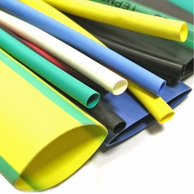
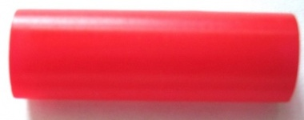
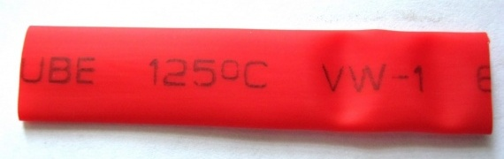
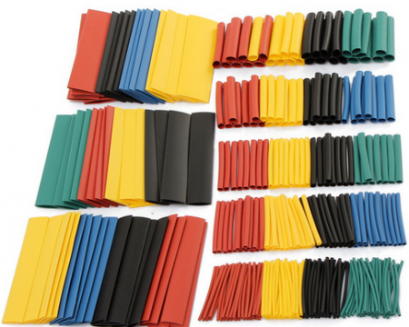
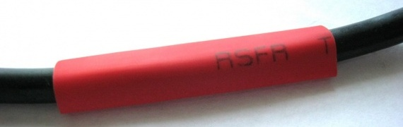
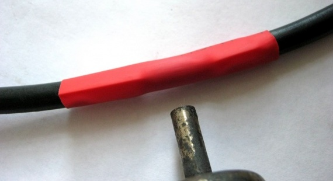
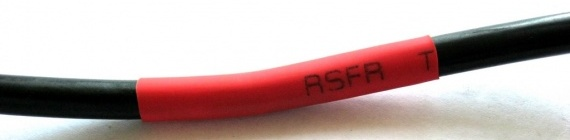
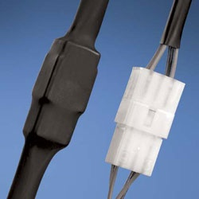

Термоусадочная трубка
Со временем изолента может отклеиться и место соединения может оказаться голым, что приведет к печальным последствиям. Можно использовать соединители проводов, а если вы хотите сделать вечное соединение, то здесь как нельзя кстати подойдет термоусадочная трубка.

Рис. 1 - Термоусадочная трубки
Термоусадочная трубка представляет собой трубочку из особого материала. Если нагревать эту трубку горячим воздухом либо огнем, то она сожмется в 2-3 раза. Термоусадка не проводит электрический ток, является прекрасным изолятором и надежно защищает место стыка проводов от агрессивной окружающей среды.
Как правильно подобрать термоусадочную трубку?
Во-первых, термоусадка должна быть в два, в два с половиной раза больше, чем провод, на который мы будем ее насаживать. Во-вторых, она должна полностью перекрывать место пайки или скрутки проводов. Это главные условия.
Термоусадки бывают двух видов: на основе поливинилхлорида и полиолефина.
Термоусадочная трубка из поливинилхлорида трубка гладкая и жесткая, применяется для жесткости крепления спаиваемых проводов. После усадки она становится твердой.

Рис. 2 - Термоусадочная трубка из поливинилхлорида

Рис. 3 - Термоусадочная трубка из полиолефина
Термоусадочная трубка из полиолефина на ощупь как резина. Чаще всего применяется именно он. Его очевидные плюсы:
- при нагреве уменьшает свои размеры в 2 — 2,5 раза;
- не трескается и сохраняет свои эластичные свойства даже при температуре до -55°C;
- не горючий;
- выдерживает напряжение до 600 В;
- отлично защищает спаиваемые стыки от коррозии и других агрессивных сред;
- не впитывает влагу;
- разноцветная палитра добавит красоту вашим изделиям
Купить комплект термоусадочной трубки дешевле всего будет на Алиэкспрессе.

Рис. 4 - Комплект термоусадочной трубки из Алиэкспресс
Чтобы подобрать термоусадку, мы должны помнить, что она должна быть раза в 2-2,5 больше диаметра провода. Если подберете её впритык к диаметру, то в процессе сжатия ее толщина станет маленькой. В результате этого она будет плохо защищать спаиваемое место.
Монтаж термоусадочной трубки
- Термоусадочную трубку одеваем на провод (рис. 5).

Рис. 5 -
- Начинаем нагревать феном при температуре ~200°C, начиная с середины. Если начнем нагревать по краям, то под ней останется воздух (рис. 6).

Рис. 6 - Нагрев термоусадочной трубки

Рис. 7 - Вид термоусадочной трубки после нагрева

Рис. 8 - Пример защиты соединения разъема